Overview
In this state of the cycle memo, I briefly walk back through the same three pillars that framed my last quarterly commentary: liquidity, leverage, and lore. Because that was my inaugural piece, much of the discussion served as a primer on each. Rather than revisiting definitions, this memo focuses on how those pillars evolved through Q4 and what they reveal about the current state of the cycle. I have reattached the Q3 memo for reference, if helpful.
From there, I am introducing a new section, “Market Debrief”, where I will cover what unfolded in equity land last quarter - winners, losers, and the market as a whole. And finally, in the spirit of the new year, I have included 2 sections that look ahead to 2026. My general “Outlook”, which covers what I believe will be the prominent drivers of markets in 2026, and “The Section Worth Reading”, where I go through 3-5 pockets of the market I am excited to monitor this coming year (and where I think most of you will scroll straight down to).
In any case, let’s dive in.
Liquidity
Liquidity conditions deteriorated through much of Q4, as real rates reversed course out of the gates.
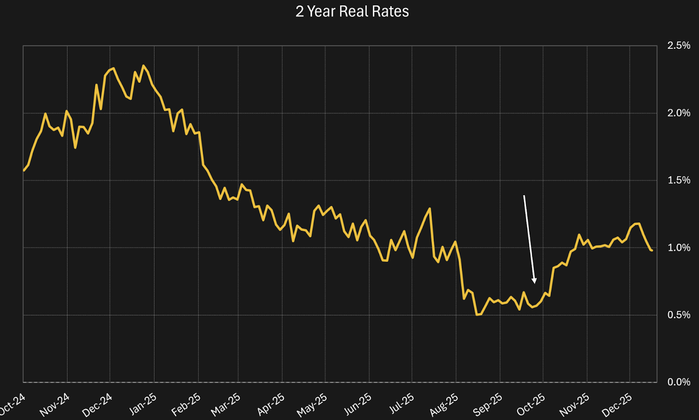
This rise was driven primarily by a collapse in inflation expectations, reflected by inflation swaps grinding lower. The driver was not the supply-side inflation relief we were all hoping for, however. For the first time in over 5 years, inflation expectations weren’t meaningfully pulled by the very thing inflation measures: the price of goods.
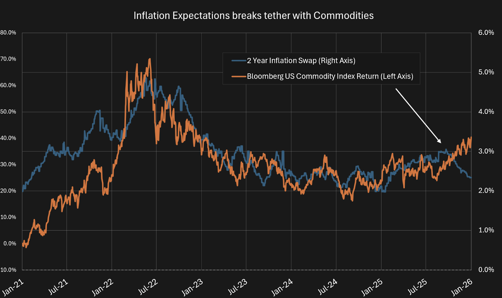
This told us that there was true consumer demand anxiety present in the market. And consumer equities confirmed that notion, coming under meaningful pressure through the first half of Q4.
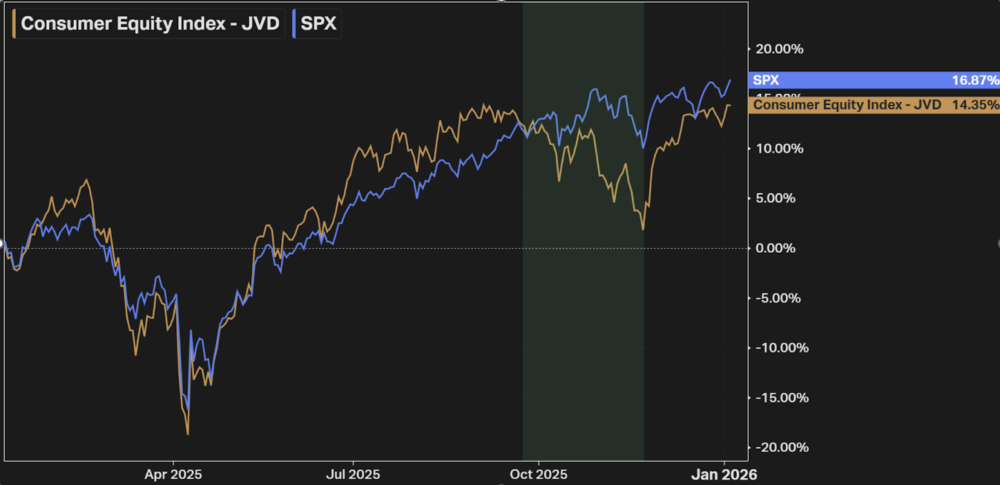
And that anxiety did not emerge in a vacuum. It was catalyzed by even more stress at the lower end of the consumer, most visibly through the failures of Tricolor and First Brands, two auto firms leveraged to high heaven. While each situation had its own idiosyncrasies, markets treated them as a shared signal. Auto loan delinquencies were rising, payments were being missed, and credit tied to subprime consumers was beginning to crack. The concern was not contagion, but confirmation. If the most rate-sensitive households were under strain, forward demand would soften, and downside inflation pressure would follow.
As inflation expectations fell, treasury yields (nominal rates) refused to follow suit. Short-end yields chopped within a narrow range, as the Fed’s narrative took center stage. The government shutdown created a prolonged data void, leaving a self-described “data-dependent” Federal Reserve without fresh prints to anchor the market’s policy forecasts. In that vacuum, the Fed began to artificially manipulate financial conditions.
And this was not accidental. Financial conditions have remained looser than the Fed desired ever since they began hiking rates in ‘22. As we all know, their traditional policy tools (rates and balance sheet sizing) have failed to tighten financial conditions (the most glaring evidence being the fact that we did not go into a recession). So the Fed attempted to take the reins and tighten through language: public appearances, transcripts, and research literature. That rhetorical tightening was enough to cap rallies in treasuries and prevent yields from falling as they otherwise might have in the face of weakening inflation expectations.
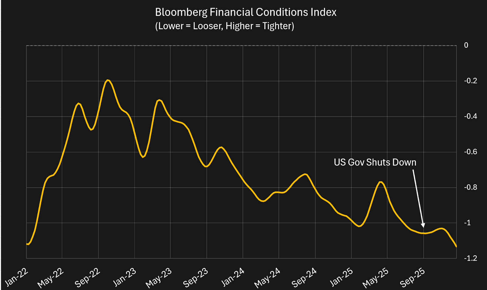
The result was mechanical. Inflation swaps fell. Yields stayed range-bound. Real rates rose. 2 + 2 equaled 4 this time.
As real rates moved higher, liquidity began to retreat from risk assets. This shift showed up first where it always does. Bitcoin, one of the most liquidity-sensitive assets in the system, rolled over sharply. The negative correlation between real rates and Bitcoin played out cleanly and in real time (whereas in the first half of 2025 the correlation wasn’t as strong, as concerns about the dollar superseded liquidity’s pull).
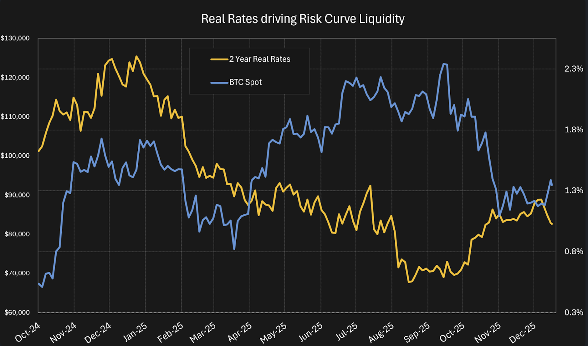
Importantly, that dynamic is now (and towards the end of me writing this) showing signs of exhaustion. You may have noticed that real rates appear to be peaking right now, and bitcoin has started to bid. Put simply, this is primarily because inflation expectations are reversing course. Strong holiday sales and a slew of gangbuster earnings from retail names in late November and throughout December quickly flipped the script on the strength of the consumer.
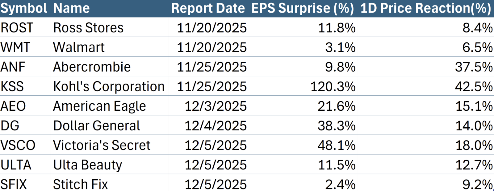
Moving into 2026, flows into bitcoin and market breadth (RSP) will both serve as reliable gauges for an inflection confirmation in liquidity conditions, and ultimately tell us where market participants will allocate their dollars across the risk curve.
Leverage
While liquidity conditions tightened during Q4 as sentiment around the consumer deteriorated, credit fundamentals themselves remained largely healthy. Bank credit continued to expand, and access to capital was not meaningfully impaired. We saw markets growing cautious, but underneath, the plumbing did not seize.
In fact, the only material credit-specific events that emerged during the quarter came from the failures of Tricolor and First Brands, as I touched on above. Credit markets extrapolated that signal quickly, raising broader concerns about (queue ominous villain music) private credit. Public market vehicles tied to private credit like BDCs sold off, not because capital was unavailable, but because risk was being repriced.
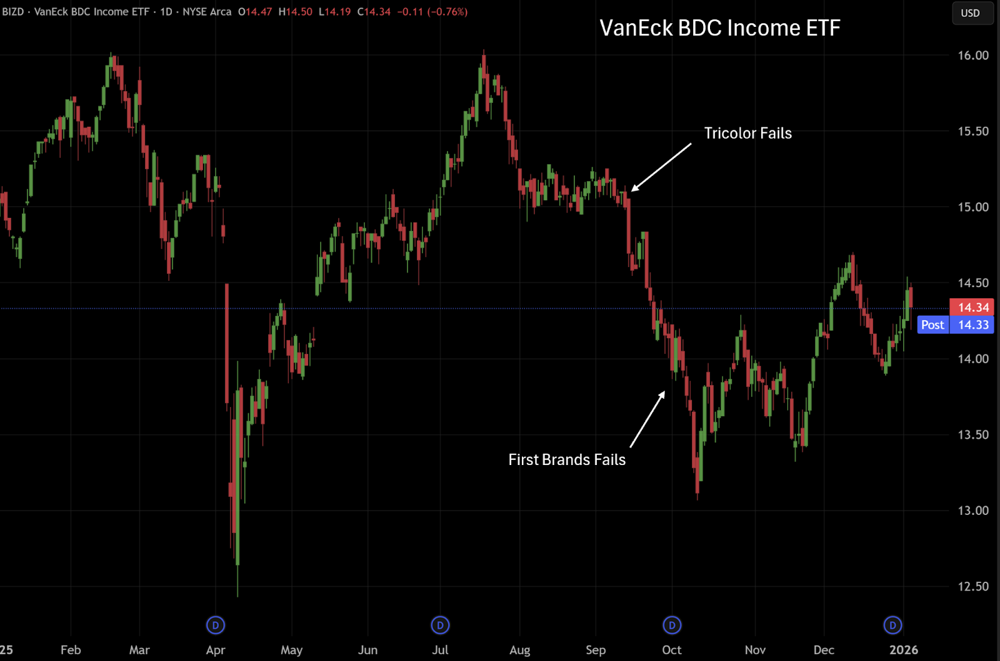
But, like consumer demand anxiety, fears eased. Issuance kept rolling, and credit spreads remained historically tight.
So were these 2 bankruptcies “isolated” events or a canary in the coal mine? Most likely isolated, but it's definitely something to continue monitoring and I will expand on my thoughts in a section below. And after all, the purpose of the canary in the coal mine is to pay attention to when the canary, well…dies.
As private credit came under scrutiny, bank lending accelerated steadily to end the year, reflecting a continuation of what was observed in Q3.
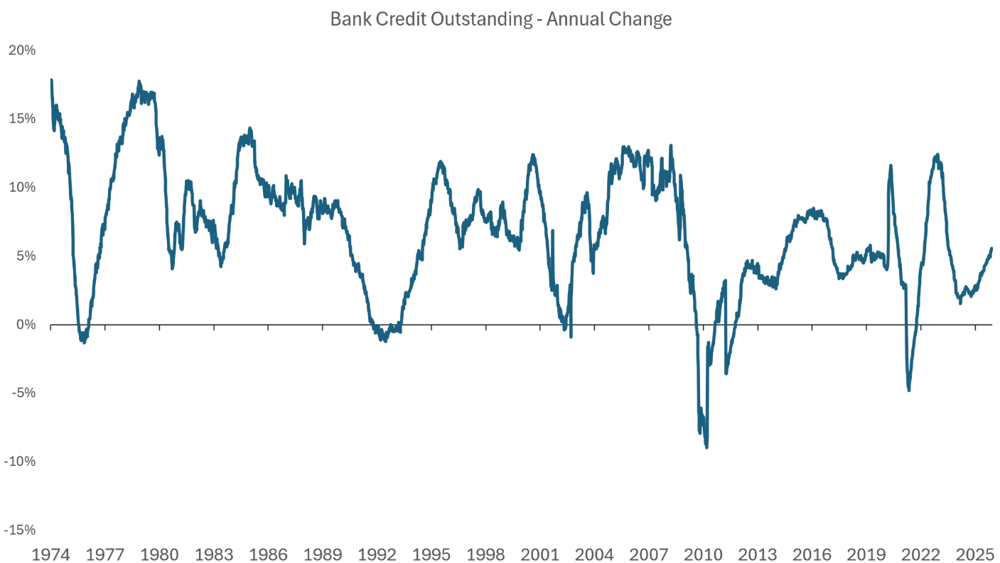
As I discussed in my previous piece, private credit picked up the slack when banks retrenched following the hung deal epidemic and SVB failure. We are now seeing the pendulum swing back towards traditional bank lending. And this is not a net neutral to credit markets. As I also noted in the previous memo, private credit and bank credit are two completely different beasts. One creates money, the other reallocates it. A true credit impulse comes from money creation, and that is when an inevitable late cycle stall begins to reaccelerate.
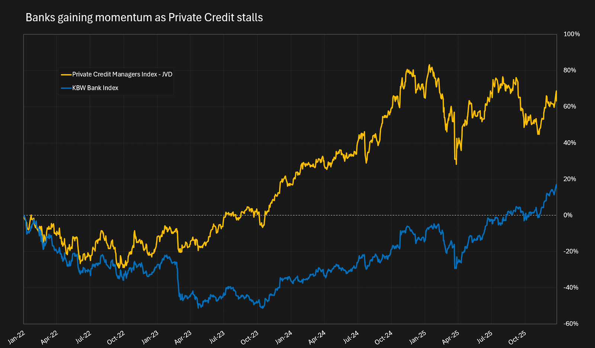
Some of you may say that the KBW Bank Index has a long way to go (it does), but it’s still full of a lot of beaten up regionals. Here are the 8 biggest US banks by deposits in 2025.
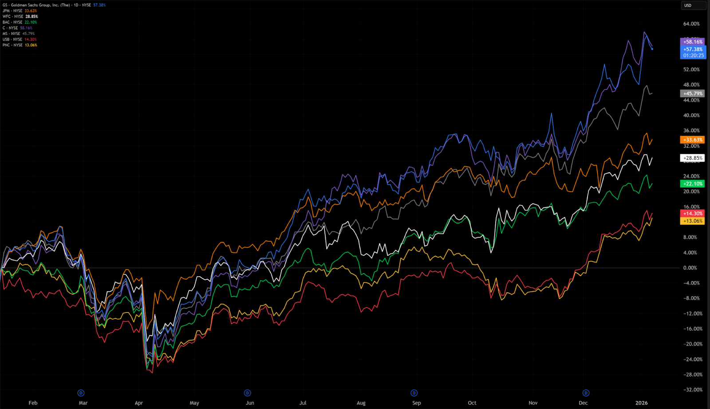
In sum, not much changed in traditional bank credit markets in Q4. Boring, yes. But most seem to be discounting the fact that bank lending is just now recovering! This will prove vital to the seemingly never-ending growth of this economic cycle.
Lore
Lore, sentiment, whatever you want to call it. I guess I’m more of a right-brained person than I thought and really wanted some catchy alliteration. Regardless, I believe psychology has just as much of an impact on markets as liquidity and credit. As I said in Q3, history doesn’t repeat itself, man does. And in every cycle, the tell is the same: when the crowd starts believing the market can only move one way, they lever up, abandon hedges, and chase.
Like credit, we saw the same Q3 “AI Bubble” narrative circulate in and throughout Q4. Narrow leadership. Valuations that “have to” mean revert. Yet this time, we saw some wobbly price action, and speculative assets proceeded to get cleaned out. Sorry to those who bought Treasury Bitcoin companies, but I see this as one of the most positive developments of Q4. It reset the sentiment indicators without breaking the market. And I can (selfishly) go into 2026 with 1 less thing to worry about.
Leverage is present, but not screaming
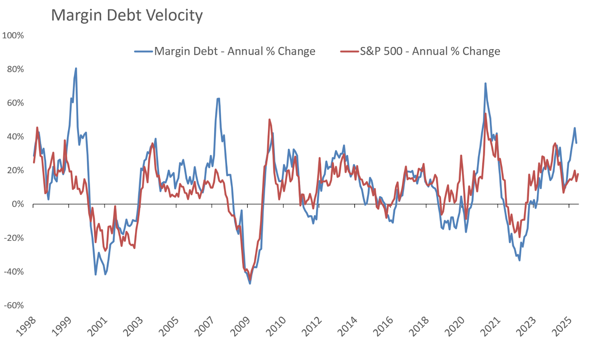
Margin debt is still growing, which tells us risk appetite exists. But the pace has cooled versus what we saw last quarter, and I wouldn’t be surprised if it meaningfully slowed in December.
Retail is not irrational in either direction (I apologize to everyone’s eyes for this chart, it’s the best I could make it).
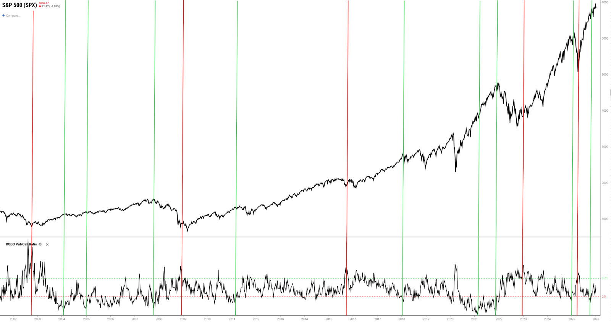
The ROBO (retail order book only) put/call ratio (lower of the 2 charts in the image above) is sitting around historical averages (period is 2001-2026). The extremes matter more than the level: when retail gets emphatic in either direction, we’re usually at an inflection point. I’ve highlighted periods when retail is significantly more bearish (red lines, high put/call ratio) and more bullish (green lines, low put/call ratio).
Retail always tends to be late and are emotionally swayed by the “% Gain/Loss” figures they read on their account statements. In other words, retail thinks about the now and gets greedy or begins to panic depending on whether they see red or green numbers. The broader market discounts 9–12 months ahead, and is emotionless. But right now, there is no clear retail stampede.
Survey optimism is ordinary
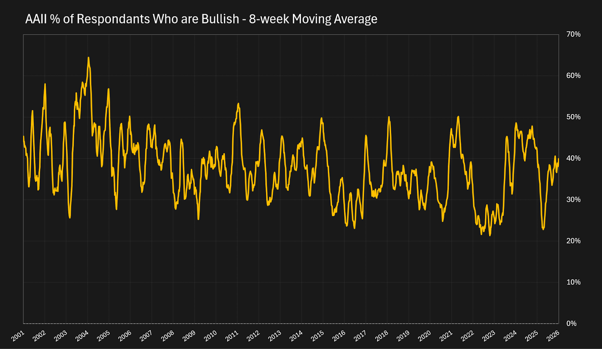
AAII bullishness is also hovering near its historical range. No “everyone is bullish” signal. No euphoric crescendo. Just a market that has moved higher while a meaningful chunk of participants remain unconvinced.
Hedge funds are still under-positioned
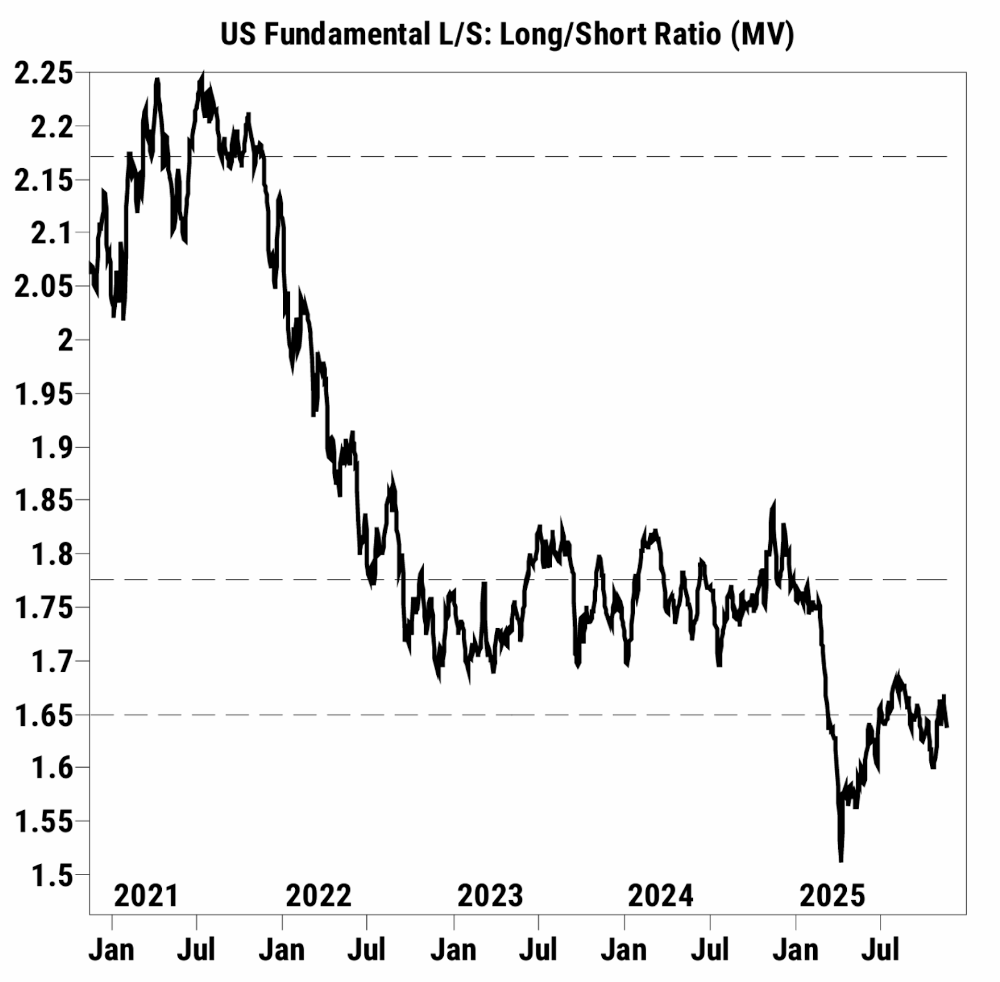
The prime brokerage desk (the hedge fund equivalent of your Schwab or Fidelity) data still reads like reluctant participation. That matters. In a market where belief has not fully caught up to price, upside can stay under-owned and hedging demand can remain elevated even as indices grind higher. This is the opposite of a crowded, one-way consensus. It is skepticism acting as fuel.
Netting it out: the market can be expensive without being euphoric. And today, the behavioral inputs look more like “cautious continuation” than “irrational exuberance.” The risk to watch is not that participants are too bullish. It’s the moment they finally become convinced and positioning flips from reluctant participation to confident embrace. That is when lore stops being a tailwind and starts becoming the risk.
Q4 Equity Market Debrief
As we learned, a lot of Q4 was defined less by new information and more by how the market processed potential risks. Volatility was driven by shifting narratives around rates, tariffs, and the consumer, but beneath the surface, the core pillars of the cycle remained intact. Liquidity acted as the headwind, while leverage showed continued signs of re-acceleration, and sentiment oscillated without tipping into excess. This section focuses on what actually played out during the quarter, where it played out, and why several widely feared outcomes ultimately failed to materialize.
The Winners: The Island of Misfit Toys
A big chunk of Q4 leadership came from areas that have been structurally under-owned and heavily shorted over the past few years. As the fog cleared around Trump’s tariff barrage, and the AI trade showed early signs of exhaustion, the market turned to sectors that were inappropriately priced with structurally sound tailwinds looming around the corner.
Biotech
Biotech’s Q4 leadership was not random and it was not purely a “rates trade.” The group entered the quarter as one of the most heavily shorted parts of the market after months of pressure tied to RFK noise and drug pricing regulation. At the same time, large-cap biotech and pharma was (and still is) staring down a real patent cliff in 2026–2027, creating a growing gap between future revenue needs and internal pipelines. Layer on falling rates and you get a sector that is both deeply discounted and extremely interest-rate sensitive.
The bull case that began to express itself in Q4 was reflexive. With the patent cliff approaching, legacy conglomerates (large-cap biotech) were increasingly forced to look outward to replenish growth, making clinical-stage assets strategically valuable again. Importantly, this was happening before rate expectations crystallized. As I mentioned in Q3, the Fed finally gave the market rate path clarity. Management teams caught wind of this too, and lower rates will always mechanically lift biotech valuations. So the incentive was to get active on M&A early, while rates were still low and target valuations were still depressed.
As M&A chatter picked up, dormant healthcare-focused hedge funds began re-engaging with the space. But positioning mattered. Many of these clinical-stage names were heavily shorted, setting the stage for violent squeezes as marginal buying returned. Those squeezes then fed back into the process: rising equity prices increased urgency for the acquirers’ management teams, who risked paying even steeper premiums if they waited, which led to higher equity prices. The result was a self-reinforcing cycle of short covering, renewed fundamental interest, and accelerating corporate activity that helped biotech finally break its multi-quarter downtrend.
Industrial metals
Industrial metals began to recover in Q4 and the miners followed, marking a clear inflection after years of false starts. The setup was fundamentally tight and geopolitically charged. Trump’s tariff dilemma, combined with the ongoing rare earths saga, pushed policymakers and corporates toward precautionary behavior. That translated into hoarding and inventory rebuilding across key industrial inputs rather than just financial speculation.
Price action confirmed the shift. Core industrial metals (Aluminum, zinc, and copper) all rallied meaningfully post-Liberation Day, signaling that the market was no longer focused solely on demand pessimism. Supply-siide constraints mattered. Mining capacity remains structurally limited after years of underinvestment, leaving little slack to absorb even modest demand surprises.
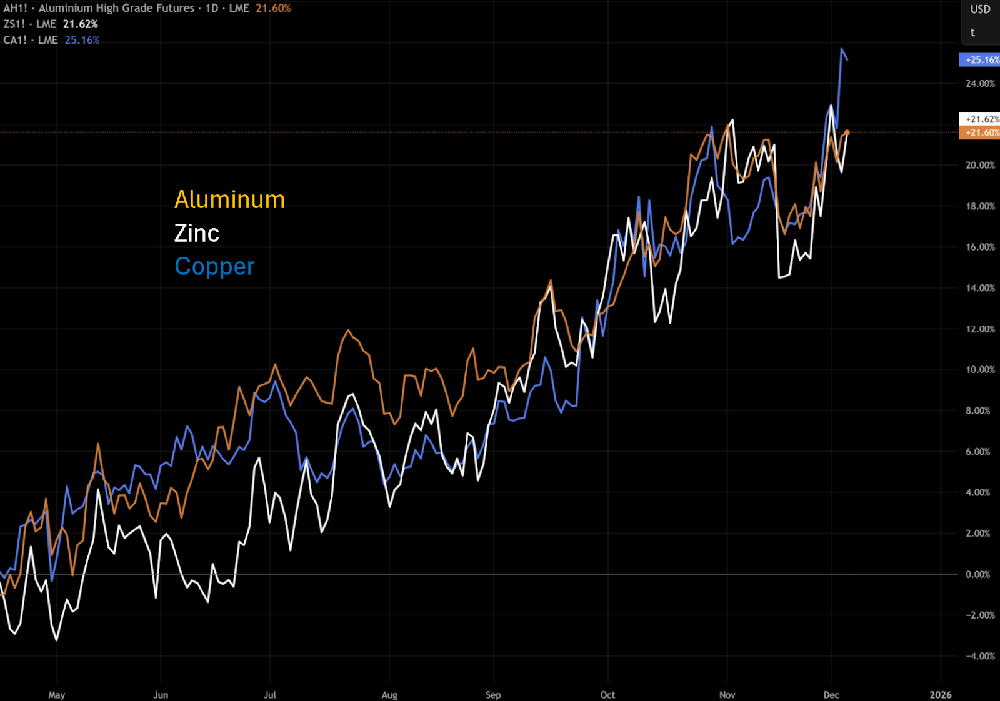
On the demand side, two long-standing drags began to ease. The U.S. auto sector is showing signs of a real recovery, improving confidence in consumption. On the other side of the world, the China property crisis appears to also be troughing, removing a major overhang on global industrial demand. Taken together, Q4’s move in industrial metals looked less like a speculative bounce and more like the early stages of a cyclical uptrend.
Banks
As covered above, banks outperformed in Q4 for reasons that consistently pointed to less pressure and more upside. I won’t go into more detail, but de-regulation hopes are also playing an important role in appreciating equity prices. I will go into dereg in another section below.
The Perpetual Datacenter Bottleneck: Memory and Optics
There’s always a bottleneck in datacenters. Optics and memory took the stage in Q4, with memory in particular benefiting from a classic commodity setup. The memory industry entered this cycle deeply scarred. After overbuilding in the prior downturn, producers pulled back aggressively, treating capacity discipline as existential rather than cyclical. In a commoditized market, that restraint mattered. Supply stayed tight just as demand surprised to the upside.
The demand shock was not incremental. Longer-context LLM queries, combined with image and video generation workloads, are far more memory intensive than earlier AI use cases. That shift caught the industry flat-footed. DRAM pricing responded accordingly, moving sharply higher as inventories tightened and lead times extended. Below is the chart for the price of a stick of memory (i.e. a flash drive) over the past year. Needless to say I will not be buying a new PC anytime soon.
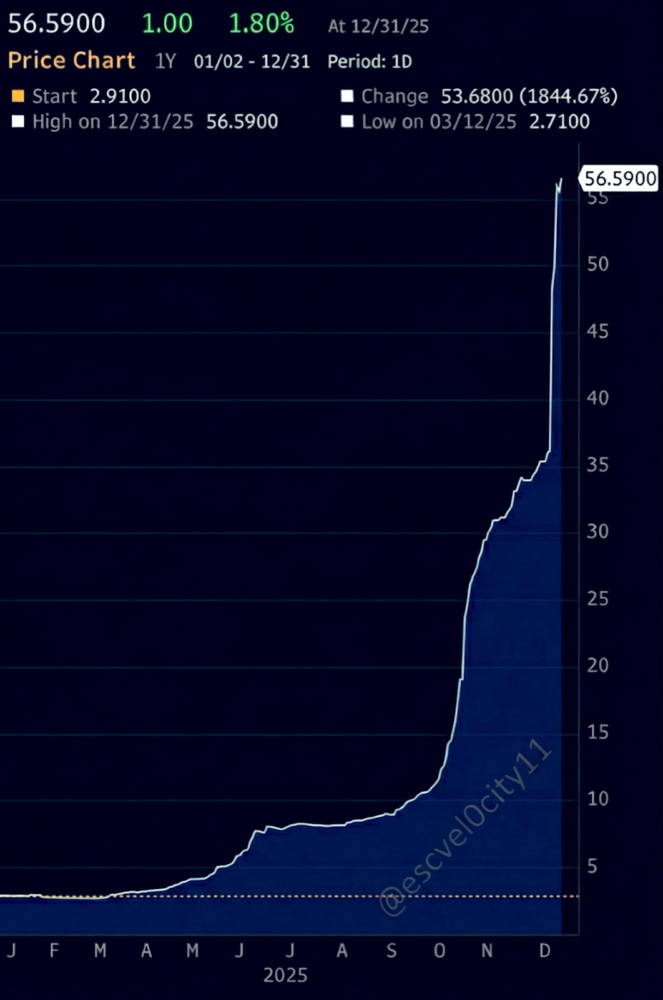
Optics benefited from the same second-order logic. As memory footprints expanded and model complexity increased, bandwidth and interconnect demands rose in parallel. The upgrade from 800G to 1.6T interconnects turned out to be a much bigger pain than most operators thought. Hitting 1.6T is not a linear step-up. It requires a transition from 112G to 224G SerDes, which fundamentally changes the physics of interconnects. At 224G, copper-based solutions run directly into Nyquist frequency limits. Signal integrity degrades too quickly. Loss, noise, and power requirements spike.
Nerd translation: copper effectively taps out at higher data transfer speeds. And the few names that dominated the space have capitalized tremendously.
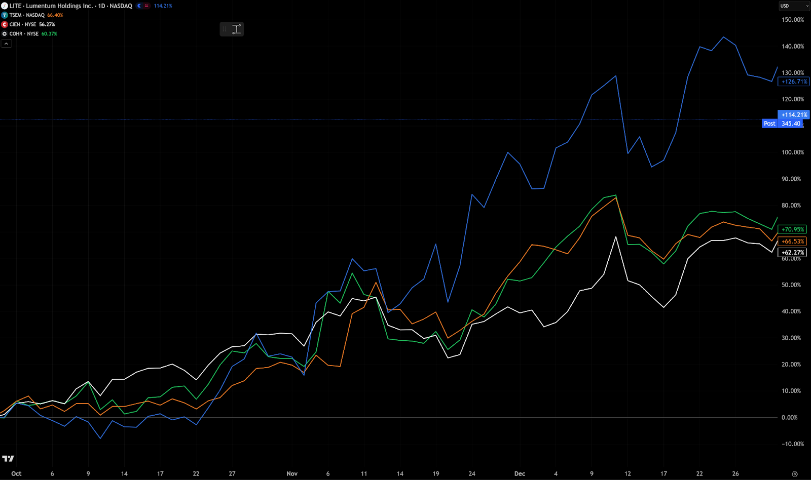
Low-Middle Income Consumer Brands
I will cover this in a section below
The Losers: Fallen Angels
Software
Software remained one of the primary losers in Q4, and the weakness went beyond simple rotation. The market began to reassess a core assumption from earlier in the AI cycle: that most software vendors would be clean beneficiaries of AI adoption. For many seat-based business models (paying per user), the opposite risk is now being priced. If AI meaningfully improves productivity, customers may need fewer users, fewer licenses, or fewer seats to accomplish the same amount of work. Efficiency gains, while positive in theory, can become a headwind to revenue growth when pricing is tied directly to headcount rather than output. I myself fell victim to this miscalculation, and was bullish on software heading into 2025.
But the positioning from institutional players explains the weakness. Software had been treated as a defensive growth allocation earlier in the year. But heading into mid-year, it became the “funding short” as the market rotated into semiconductors and then into broader sector laggards. A “funding short” is what all L/S hedge funds run to remain cash neutral, i.e. a pairs trade.
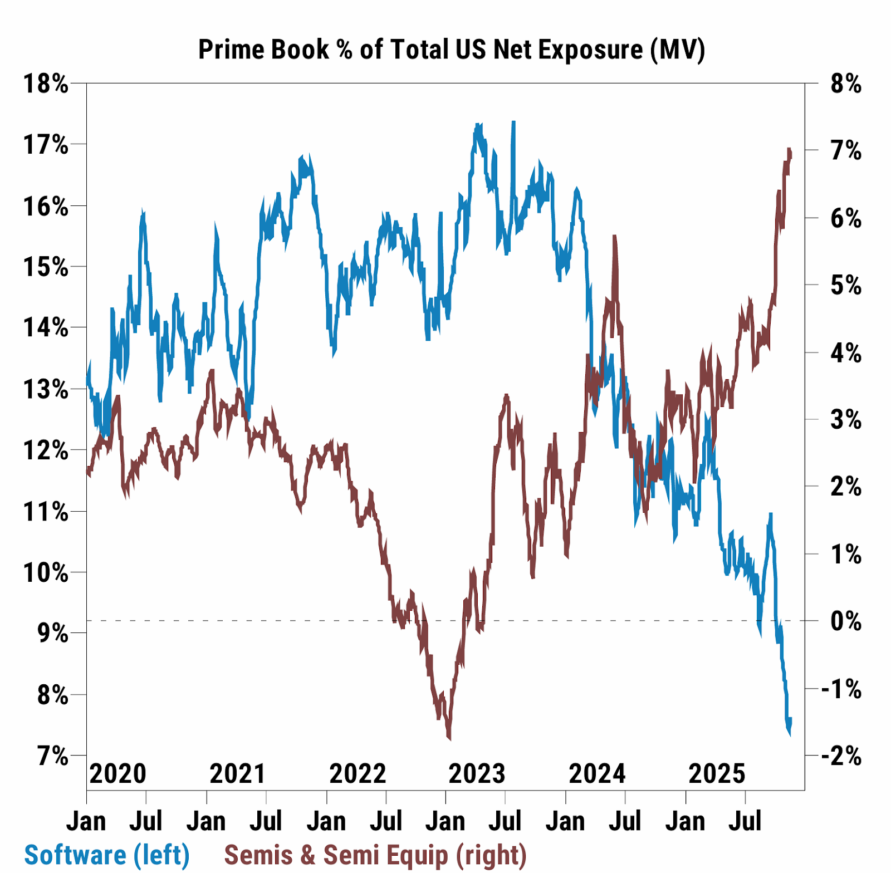
The result was persistent selling pressure even in the absence of negative earnings revisions. Investors were not reacting to deteriorating fundamentals so much as repricing duration, business-model risk, and relative opportunity cost. Makes sense given we were in a quarter defined by sentiment and flows, software just unfortunately sat on the wrong side of both.
Meme stocks and the speculative complex
Meme stocks entered Q4 with momentum, reacting quickly to easing financial conditions and lower real rates. As in prior cycles, they were among the most liquidity sensitive assets in the market, second only to bitcoin. Early in the quarter, that sensitivity worked in their favor.
The dynamic then reversed. As real rates stabilized and risk appetite rotated toward areas with clearer earnings and structural support, meme stocks were sold aggressively. Unlike bitcoin or the broader equity market, they failed to recover. The drawdown was sharp, and the absence of follow-through buying underscored a key point from Q4: liquidity was selective. Speculative enthusiasm briefly resurfaced, then dissipated, leaving meme stocks as one of the clearest examples of excess being purged beneath an otherwise resilient index.
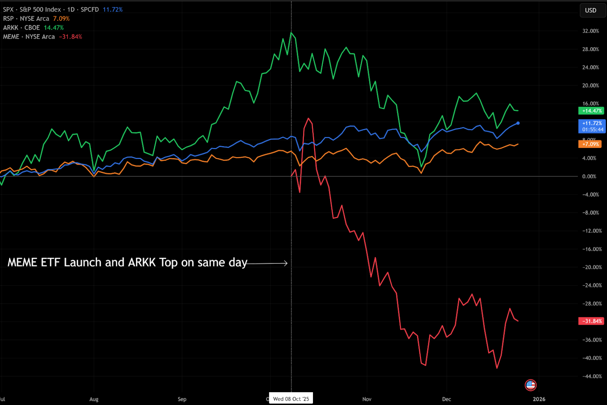
“Quality”
Quality was one of the more important losers in Q4, but for reasons that had little to do with deteriorating fundamentals. Capital flowed aggressively into quality at the beginning of 2025 as Trump-related policy risk crept into the market. Safety, balance-sheet strength, and earnings visibility were the dominant objectives, and quality became the preferred parking spot.
But names like RSG, BRKB, and COST lost their bid post–Liberation Day. As event risk cleared and markets refocused on upside optionality, capital rotated out of defensives and into growth areas that had been heavily punished earlier in the year, most notably semiconductors. And once AI exhaustion appeared, the market moved again, this time toward the aforementioned under-allocated sectors.
In that context, quality underperformance was a function of capital reallocation, not a loss of confidence. It was the funding source for a market that shifted from fear-driven positioning to opportunity-driven positioning. Again, consistent with a quarter dominated by sentiment and flows rather than new fundamental information.
Why the market ground higher anyway
Q4 delivered multiple stress tests that typically crack a tape. Primarily because, well, nothing really happened. The labor market was supposed to unravel but remained firm. Private credit was supposed to go bust but got brushed aside. Trump did trump things but it appears the market is kind of numb to that now. All noise, not hard data.
What did happen was real rates ticked up, financial conditions tightened at the margin, and bubble anxiety was elevated. And as soon as there was a whisper of bad news, liquidity-sensitive parts of the market reacted immediately. Meme stocks and Bitcoin are the cleanest examples. When they roll over, it is usually a sign the “easy money” bid is fading.
And yet the index refused to break.
That divergence is the story. Plenty of investors had reasons to reduce risk. But instead of cascading into broad de-leveraging, the selling stayed contained. Drawdowns were shallow. Dips were brief.
The simplest explanation is underallocation. Coming into the quarter, many investors (as shown in the prime brokerage data above) were not positioned as aggressively as prices implied. In that environment, weakness does not trigger forced selling. It triggers incremental buying. Every pullback becomes a chance to add exposure rather than a signal to exit, because the marginal investor still needs to get in.
So Q4 wasn’t a quarter of new information. It was a quarter where the market’s resilience revealed the positioning backdrop. Real rates, rich valuations, and a speculative unwind gave the market a reason to break. It didn’t, because too many participants were still underexposed and looking for opportunities to join, and nothing really happened.
2026 Outlook
There is plenty to look out for in 2026 and no, it is not just “rates down, stocks up.” The calendar is packed with variables that can change the market’s reaction function: a likely easing cycle and a potential Fed Chair transition, midterms, the delayed but real transmission of OBBB-related stimulus, and plenty more that none of us will be able to foresee. I mean, we kidnapped a president in the time I was proofreading this memo. 2026 is a year where policy, geopolitics, and funding conditions can matter as much as earnings, and one where tail events will most likely be what I am writing about this time next year.
Bullish Factors I’m Watching: Groundhog Day
Fiscal Tailwinds
The cleanest constructive input for 2026 is fiscal impulse with a more direct transmission mechanism than most investors appreciate. If the OBBB package delivers meaningful tax savings and refund timing creates a front-loaded cash-flow bump, it can support nominal demand without requiring a surge in confidence. That matters for equities because it lifts the floor under revenues, reduces downside earnings risk, and makes “good enough” growth prints sufficient to keep risk assets supported. The impulse is also frontloaded in 2026.
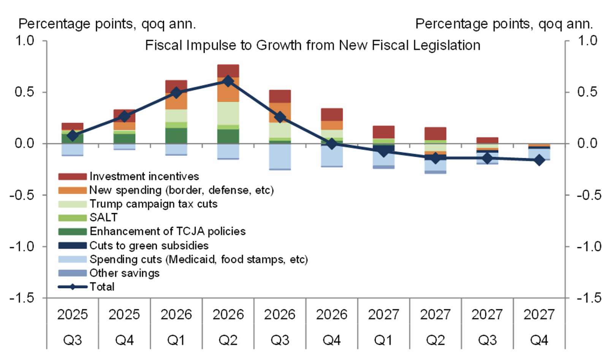
The risk is obvious: fiscal support can keep nominal growth firm even as the market worries about deficits and supply of Treasuries. But for equities, the near-term effect is usually the same. Better cash flows first. Worry about the financing regime second.“Kick can down road”, rinse and repeat.
Regional Bank De-Regulation
As noted above, we are already seeing some names front run an easing of bank capital requirements. No, I am not underwriting a return to 2006 behavior. The bull case is simpler and more incremental: if supervision and capital interpretation ease even modestly, the distribution of outcomes for regionals widens in a favorable direction. Less regulatory pressure can improve capital flexibility, unlock balance-sheet growth where it makes sense, and restart a more rational M&A cycle. Even the perception of a friendlier regime can compress the “policy risk premium” that has sat on the group for years. Morgan Stanley estimates that US banks could get an extra $1 trillion (yes, with a T) in lending capacity on top of an already accelerating issuance cycle. Regional banks would also be exempted from stress tests designed for GSIBs.
A lower-rate backdrop reinforces that setup. Meanwhile, any wobble in private credit or non-bank lending tends to make traditional lenders look comparatively attractive on transparency and funding durability.
M&A Revival
Allegion
COMP HOUS
RKT COOP
OTHERS
AI Efficiency
The next leg of the AI cycle is not only about who sells GPUs. It is about who captures the productivity dividend. If 2024–2025 was buildout and experimentation, 2026 has a chance to be the first year where investors start underwriting repeatable efficiency in operating metrics rather than anecdotes. This matters because efficiency is margin math. A lot of firms already did the painful “discipline” phase in 2022–2023. If AI now becomes an accelerant to those cost structures, you get operating leverage without needing booming upfront costs.
The deeper implication is breadth. When AI is framed as capex, leadership stays narrow. When AI becomes measurable productivity, the earnings story can broaden across sectors. That is a healthier kind of bull market because it leans on earnings durability and margins, not just multiple expansion.
Of course, this is a double edged sword. AI efficiency could also result in a “white collar purge”, that would hurt the higher earning cohort of consumers.
Bearish Factors I’m Watching: Three Swans and an Elephant Walk Into a Bar
Swan No. 1: Liquidity Friction via Cross Border Flows
Yes, I covered this last memo. But it is still lurking in the shadows, despite the fact that the narrative surrounding it has dissipated somewhat. That is why I’m characterizing it as a tail risk now. It’s underpriced.
Valuations can remain extended when the marginal buyer is structural (another country) rather than euphoric. A meaningful part of that structure has been cross-border demand for U.S. assets and U.S. debt. The risk is not that foreign participation “fades” gracefully. The risk is that it becomes politicized, weaponized, or repriced abruptly following an external shock or a policy escalation.
Swan No. 2: Private Credit
This may seem contradictory since I just said the wobbles from Tricolor and First Brands were brushed aside. But like I said, the canary did die. The right way to frame private credit risk is not “it will blow up.” It is that the downside is nonlinear, path-dependent, and easy to underestimate because the system is unbelievably opaque. As we discussed earlier, the most important Q4 signal was that isolated credit stress remained informational rather than systemic. But narratives and sentiment matter a lot when it comes to private credit because, unlike banks, they need outside investors to fund their lending.
There are a few specific pressure points I care about:
Marking and liquidity mismatch. A big part of private credit’s appeal has been the appearance of stability (*cough* lack of investor protections that force transparency). In a stressed environment, the question becomes whether marks adjust fast enough to reflect impairment and whether the liquidity offered to end-investors matches the liquidity of the underlying loans.
Shifting exposure into harder-to-recover collateral. A meaningful amount of private credit has migrated toward sponsor-backed, cash-flow loans in software and tech-adjacent businesses. For example, software makes up ~5% of the High Yield Corporate Bond Index. It makes up roughly 15% of all private credit LBO loans.
That is exactly the kind of collateral where recoveries can be structurally lower in a real impairment scenario. And as I mentioned above in the equity section, parts of software face genuine business-model risk from AI. If AI compresses seat-based pricing power or reduces user counts, what looks like stable, recurring revenue can become less durable right when refinancing matters.
Bank deregulation. I won’t regurgitate the wonderful work of one of my favorite FT columnists, Brooke Masters. I’ll Instead leave the brief piece here for you all to enjoy yourselves: Deregulation will pour extra fuel on the private credit bonfire
And this piece also brought me to a very interesting development in private credit land. Reports with regard to Marc Rowan and Apollo’s shift in allocation strategy this past quarter:
“Marc Rowan informed investors that his top priority is building “the best possible balance sheet” to ensure the firm is ready to profit when “bad things happen.” ... Apollo’s leadership warns that current asset prices have reached unsustainable levels while geopolitical tensions and “sticky” interest rates threaten to trigger a systemic shock…..Apollo is currently operating in a state of high alert, with internal executives describing the atmosphere as “waiting on the edge” for the next major market surge or upheaval. This defensive posture is a direct response to Rowan’s belief that long-term interest rates will not fall as fast as the market expects…”
When the largest, most sophisticated credit platforms publicly emphasize liquidity, balance-sheet strength, and a more defensive posture, I pay attention.
Now, this is not a forecast of imminent collapse. It is an acknowledgement that the payoff in credit is asymmetric, i.e. the risk-reward curve is out of favor, and that being liquid when others are not is how you earn your keep in the next dislocation. If we all started going to cash as soon as Buffet and Berkshire did, we would have missed out on ~40% upside in the S&P 500.
Some may point out that I just said banks can fill the void if private credit comes to a screeching halt. And that’s true, they can, and it looks like the timing would be perfect. But any contraction in business funding is bad for the economy at the margin, and banks are notoriously slower when it comes to shilling out loans. On the flip side, it’s almost inappropriate for me to call a souring a private credit a “black swan”, since the opaque nature of the market also means any blow up will unfold slowly. The good news is if private credit starts to become impaired, we’d have most likely already seen it in equity prices as earnings deteriorate.
Swan No. 3: AI
Yes, I also covered this last memo, and won’t go into it in any more detail. But here is an update on the metric I have been using to monitor data center compute demand, used GPU prices:
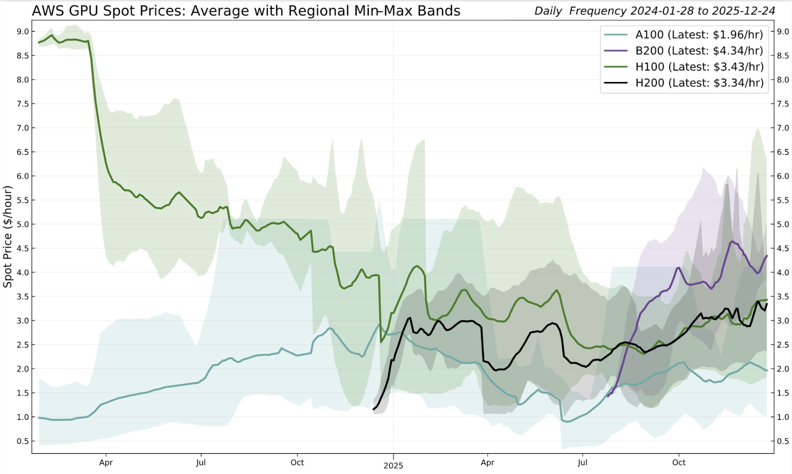
That looks healthy to me, and I will continue to keep an eye on this. Leverage and debt issuance will also be something I’m looking forward to monitoring. Doug O’Laughlin of SemiAnalysis, wrote a great piece on the railroad boom of the late 19th century, and makes some comparisons to today’s AI buildout. You can find the post here.
The only true “this all blows up in a day” event is a new AI model breakthrough like Deep Seek, and that I cannot forecast out or predict.
The Elephant: Immigration
Immigration is not just a political issue. It is a supply-side input into potential output. If immigration slows materially, you can see an unemployment rate that looks optically fine while the economy quietly loses capacity because the labor-force denominator is smaller. That can keep “employment” prints stable while growth potential deteriorates. As of today, this hasn’t come through in the employment figures.
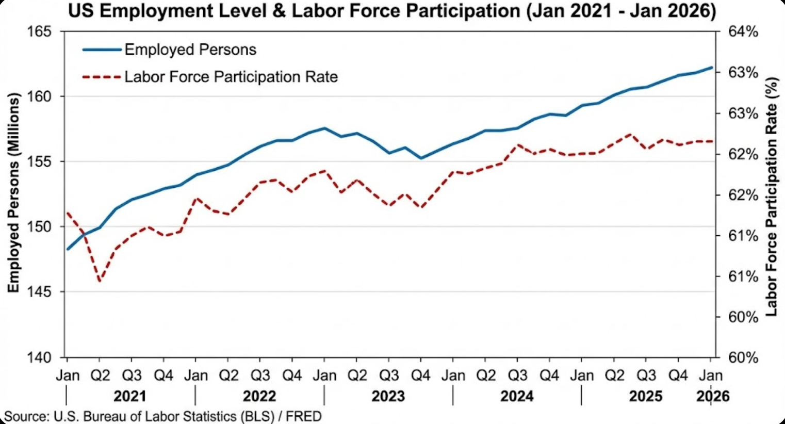
But you have to note that a lot of immigrants are undocumented, i.e. they wouldn’t even show up in these prints anyhow. It is the productivity figures that need to be monitored (which will be hard to read because AI is supposed to improve productivity).
The mix matters even more. Immigrants skew more blue-collar in many categories. Meanwhile, as I mentioned, the first wave of AI displacement pressure is more concentrated in white-collar workflows. In theory, displaced white-collar workers eventually fill gaps here. In practice, that transition is slow, socially messy, and not frictionless. The risk is a period where job dynamics and service inflation remain sticky even as certain parts of the labor market soften, complicating the path for rates and seriously hurting consumer spending.
Bottom Line: Continuation is still underpriced
I want to end this outlook where we ended the market-action discussion: the market has already shown it can digest stress in the most speculative corners without capitulating into a broader breakdown. That matters. A lot. It tells us that participants are not behaving like they are all-in, and it tells us the system has plenty of buyers itching to deploy.
My base case remains that the most underpriced outcome is the boring one: continuation. The tape grinds higher, dips stay buyable, and the market forces incremental participation over time. Too many participants are still underexposed.
The risk to that view is geopolitics and tail risks (Black swans). If those remain contained, 2026 can still be a year where the market climbs a wall of worry for the same reason Q4 did. That’s why it's called a pain trade.
“The Section Worth Reading”
I wanted to include something a little more fun in this memo, and I figured some more “esoteric” market curiosities of mine may be enjoyable. And yes, I completely understand if you scrolled through half of the entire memo to this section. No hard feelings.
Before I dive in though, I have to mention a few things for compliance’s sake. None of the topics/companies discussed below are solicitations for investment advice and this is for informational purposes only. I do not explicitly recommend any of the securities mentioned. I am simply providing my thoughts on a few interesting areas of the market and companies I am curious about and excited to observe this coming year. I am only sharing this information with you, my clients, because I believe, as a fellow hobbyist, you may enjoy these narratives as well.
Offshore Oil
Offshore oil has been a dumpster fire for more than a decade now. The surviving executives have developed a "cyclical corporate personality disorder" characterized by a radical refusal to expand capacity, just like the memory chip management teams, but a lot worse.
The world still needs a lot of oil, and the easy barrels are not getting easier. Shale (onshore) is fast-cycle and responsive, but it declines quickly and it has become structurally more disciplined. That leaves a gap that has to be filled by sources that can deliver large, steady volumes over long periods. Offshore does that. And because they can deliver more volume for longer, the unit economics are more attractive. Offshore still breaks even sub $50/b of crude, shale starts to struggle then. And with today’s oil prices having more downside than upside risk via a Ukraine-Russia ceasefire and now Venezuela, the incentive to drill in the ocean has become even more attractive.
The other side of the trade is the real story: the offshore supply chain is tight by construction. The rig fleet was rationalized hard after the last bust. Older units were scrapped. Balance sheets were destroyed and rebuilt. Newbuilds essentially stopped. You cannot just wake up and add meaningful offshore drilling capacity. And I mean that. You physically can’t. Even if someone decided to start a company that could make a new drillship today, it is a multi-year process with a long lead time. In other words, supply is fixed in the time horizon that matters.
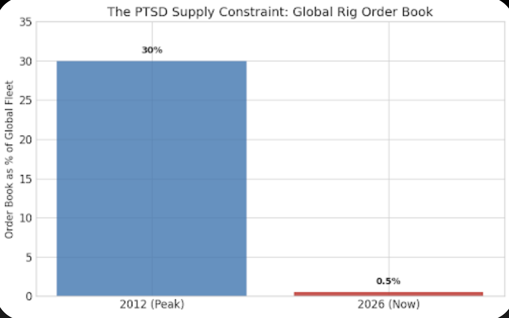
When you put fixed supply against a steady improvement in demand for offshore work, the economics are straightforward. A “consolidation phase” of the classic Marathon capital cycle. Offshore “day rates” behave like any other constrained rental market. They move slowly until they don’t. Once you get past a threshold where rigs are meaningfully scarce, pricing can reset quickly.
The punchline is that offshore is one of the few places where the industry structure forces discipline. Supply cannot flood in quickly. Pricing power can persist. And the market still tends to treat offshore like a “last cycle” trade, even though the setup increasingly looks like a multi-year normalization with real scarcity under the hood. Firms like TDW, RIG, VAL, and SDRL, stand to benefit if this scenario plays out.
K-Shaped Mean Reversion - Apparel and Trucking
The K-shaped economy has been a feature of America for close to 4 years now. Higher earners kept spending as inflation stayed sticky and rates rose, but the middle/lower-income cohort has been living in a different world, where essentials stayed expensive, interest payments took precedence, and “normal” purchases started feeling like trade-offs. This is the part of the market that has felt the most fragile and it is why sentiment around apparel, value retail, and the companies that serve everyday demand has been so jumpy.
Then tariffs piled on. For the middle/lower income cohort, costs have mainly been absorbed by the companies paying the taxes. This has led to margin compression on top of already weeak demand from their target demographic. The result is a pocket of the market that has been hit twice, first by the long-running K-shape, and then by the tariff overhang.
The 2026 setup, though, has a plausible mean-reversion path. The first lever is mechanical and it tends to be underappreciated: a very large tax refund. This upcoming 2026 tax refund is set to be the largest in years, by a lot:
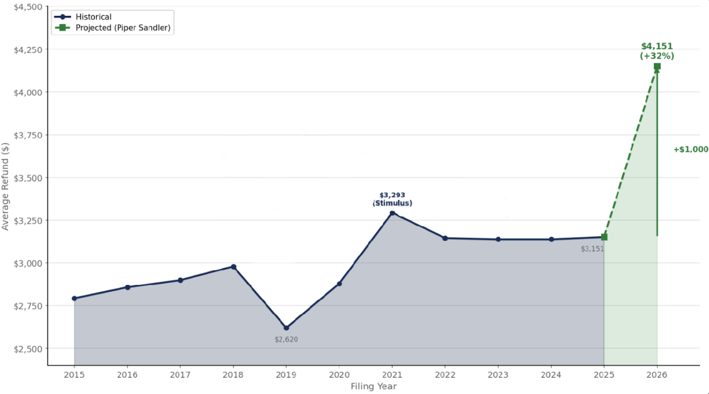
A large refund season acts like a one-time liquidity injection that is disproportionately relevant to the middle-income consumer. It is not a “wealth effect.” It is cash in the checking account. When that happens, spending psychology changes quickly. And I can always rely on psychological phenomena.
The second lever is wages. Blue-collar industries have had genuine wage momentum, and unlike asset prices, wage growth is experienced every two weeks. It does not need confidence to translate into consumption. The third lever is rates. If we get a lower-rate environment, monthly payment pressure eases and financing becomes less punitive. That is not a panacea, but for a cohort that lives closer to the monthly budget constraint, it matters.
And the biggest lever is the Supreme Court decision on IEEPA enforced tariffs. And based on the verbal arguments in November, the market is leaning towards a ruling in the favor of domestic importers:
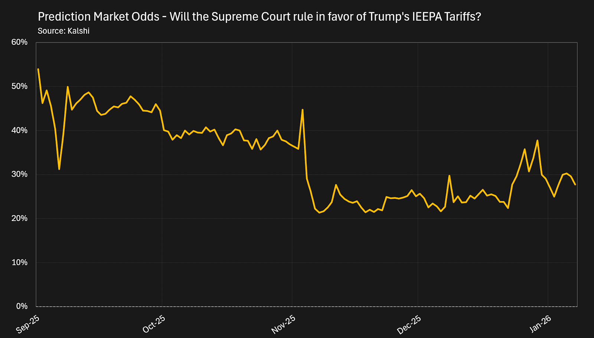
If this were to happen, not only would earnings guidance get re-underwritten, but cash would hit these firms' balance sheets in the form of refunds. Yes, the Treasury would have to pay the tariffs back.
Apparel is the cleanest expression of the “tariff pressure to tariff relief” asymmetry. As I showed in a section above, retail names have been reporting very solid earnings, or earnings that aren’t nearly as gloom and doom as the street anticipated. On top of this, most apparel (particularly footwear) is manufactured overseas in Vietnam and China. Both countries have hefty IEEPA tariffs over their heads:
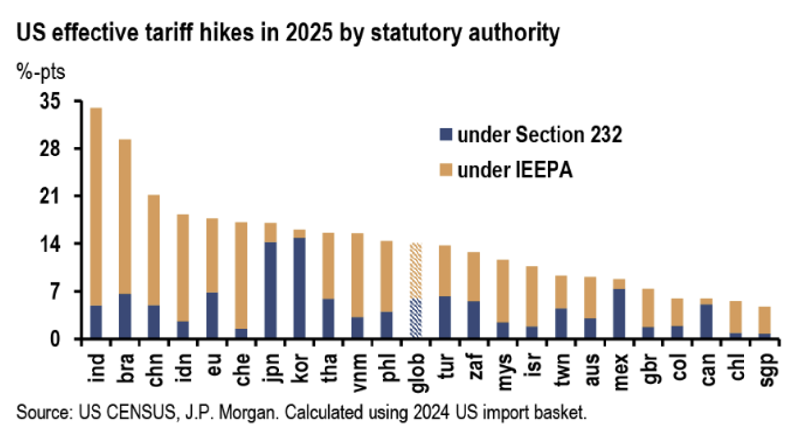
Names like GAP, ANF, and AS in apparel and DECK, VFC, and SHOO in footwear would benefit if this were to unfold. Larger retail names will also benefit too, particularly those that have seen the overhang from the K-Shaped economy, such as TGT.
Trucking is the second-order beneficiary, and it can move even more violently because it is a supply-demand market. If refunds and wage momentum create a demand burst, it will pull goods through the system. But the key is that capacity is not what it used to be. Carriers have been managing fleets tightly, marginal capacity has been squeezed out, and the industry has been acting more disciplined than in prior cycles. Add a low level of retail inventory into that mix and you get the classic recipe for a restocking impulse at the same time that trucking capacity is constrained. When that happens, pricing snaps. Day rates and spot rates do not grind higher. They gap higher.
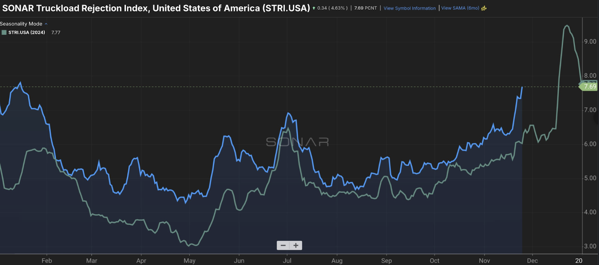
The Truckload Rejection Index measures the % of shipments rejected by trucking companies because they don’t have capacity. I would be surprised if spot rates don’t jump 10-15% in an inventory rebuild. Companies operating in this space include ODFL, JBHT, and XPO.
Housing w/ COMP Spotlight
Housing has been frozen because affordability broke. Home prices reset higher coming out of the pandemic. Mortgage rates moved up. Inflation raised the cost of everything else. Put those together and the same house became dramatically harder to buy, even for people with decent jobs. That is why transaction volumes collapsed. It is not that buyers disappeared. It is that the hurdle rate for “yes” moved too far away. We all know this.
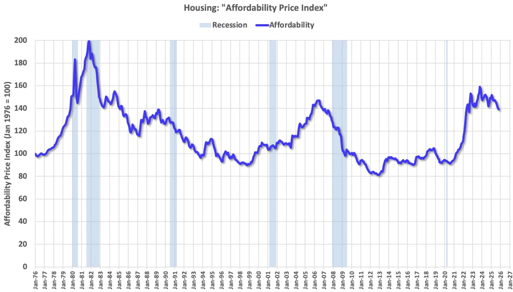
The important setup for 2026 is that housing does not need a full-blown boom to matter for equities. It needs a thaw. If inflation keeps cooling and rates drift lower, affordability improves at the margin.
At the same time, supply has been weirdly tight. Many homeowners are locked into low mortgage rates and do not want to sell. So inventory has stayed constrained, which has helped keep prices sticky even as volumes fell. If rates fall, the first response is typically more activity, not an immediate price collapse as most believe. More listings come out. More buyers show up. The system starts moving again. That is the environment where the transaction-levered names can surprise to the upside.
On the policy side, housing affordability has clearly become a messaging priority for the Trump administration, and that matters because housing is one of the few issues where rhetoric can translate from “headline catalysts” for sentiment into real policy very quickly. We’ve heard calls to Powell to lower rates for housing affordability, plans to block institutional asset managers from buying homes, and a “big announcement” for housing scheduled for early January. The most “feasible” outcome is artificial compression of mortgage rates through Treasury market operations.
RKT and COMP (covered below) are the easiest ways to see if transaction volumes will see an uplift, whereas ETFs like XHB, and companies like TREX, IBP, and REZI will rise if a buildout in new homes starts to take shape.
COMP Spotlight. The structural story inside housing is that the rules of residential brokerage are changing. The big commission lawsuit with the NAR did not just create noise. It attacked the old incentive plumbing where seller-paid commissions were implicitly baked into the listing process and reinforced the MLS as the central exchange.
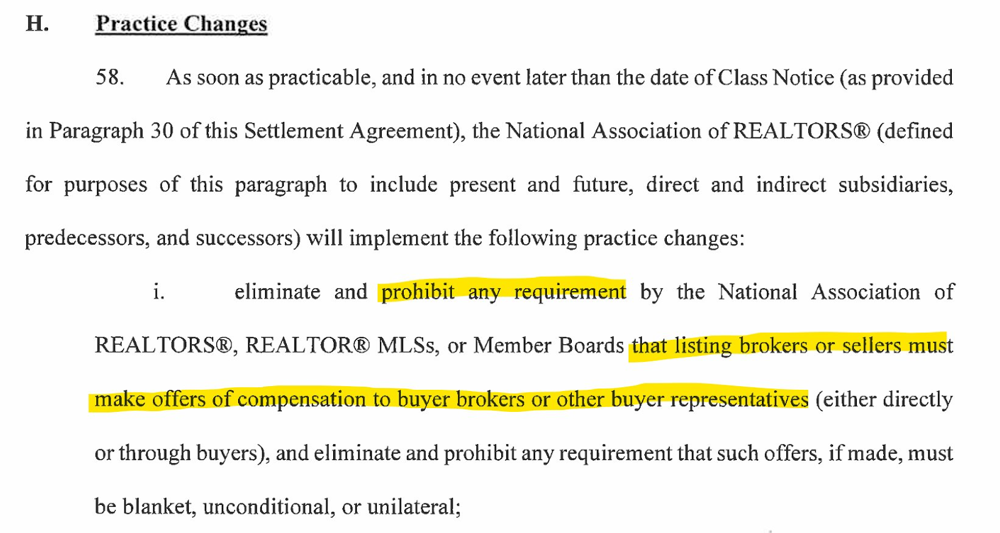
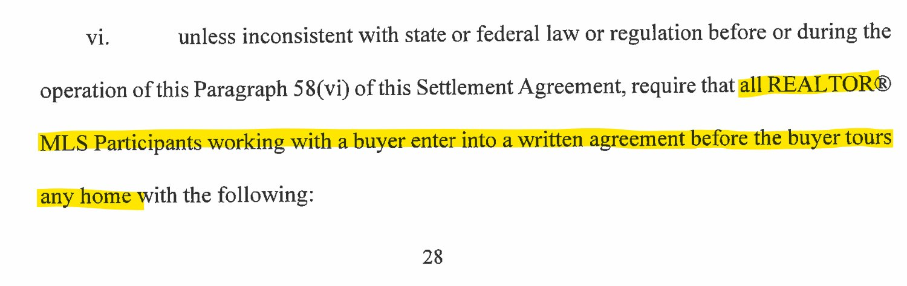
As the system shifts toward buyers explicitly negotiating and paying for representation, the MLS becomes less of a toll road for ensuring buyer-agent compensation. And once the toll road is less essential, the distribution of listings becomes contestable. Here is an infographic (thanks Google Gemini) of the old and new comp structure/flow:
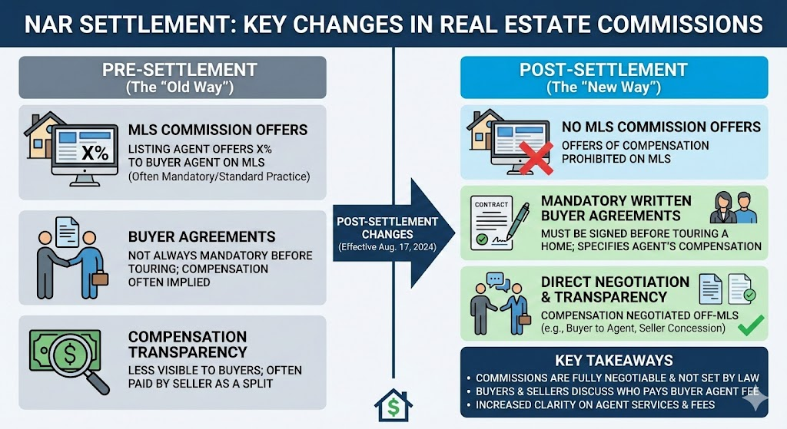
This change is where COMP is trying to play offense. In October, they submitted a bid to merge with HOUS, or Anywhere Realty, which owns brokerages like Century21, Coldwell Banker, and Sotheby’s. Their goal is to build an agent network so large that Compass becomes its own marketplace, or MLS, with enough inventory and enough buyer reach that listings can circulate within the network before they ever need to hit the traditional channels. “Private exclusives” are what they call them. Not because every home will sell privately, but because controlling the marketplace is valuable.
COMP’s plan to become the new MLS has been validated, in my opinion, by Zillow’s response. Zillow’s business model is downstream of broad listing access. They pay MLS to get listings onto their platform, and that’s it. They are rent-payers and rent-seekers. Their actions to the merger announcement lends credence to the fact that MLS may become useless, or an existential threat to their entire business model.
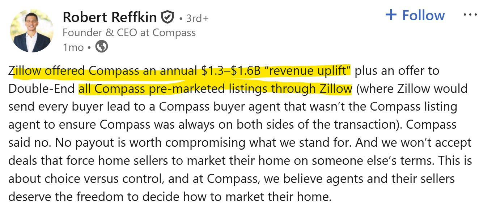
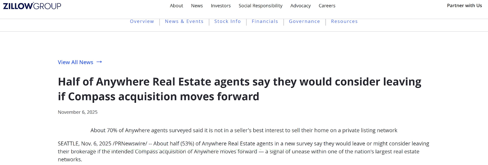
The risk to COMP is straightforward though. Regulators can intervene on the merger. But the upside is also clear. If residential brokerage is moving from one dominant marketplace toward multiple competing ones, there is a real path where Compass emerges as the most important private network in the U.S. housing market.
Semi Equipment and Packaging
Most people talk about AI chips like it’s a winner-take-all fight. GPU vs custom chips. One architecture vs another. That framing misses the point. No matter who wins the design war, the world still has to manufacture an absurd number of cutting-edge wafers, and the path to doing that is getting harder, not easier.
Chips used to get meaningfully better mainly by making transistors smaller. Performance gains are moving from “one perfect chip” to “a system of chips working together.” That means chiplets, stacked memory, and increasingly fancy ways of gluing and wiring multiple pieces of silicon into one product.
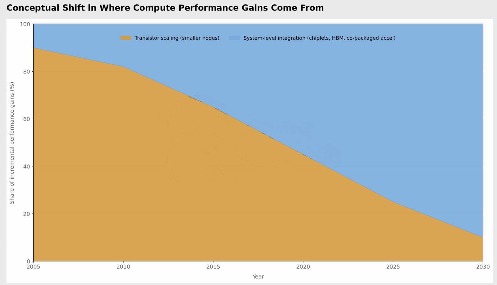
This is good for 2 markets, packaging and equipment.
For those who don’t know, semi packaging is exactly what it sounds like. Taking those different types of chips and housing them in one system. Easy.
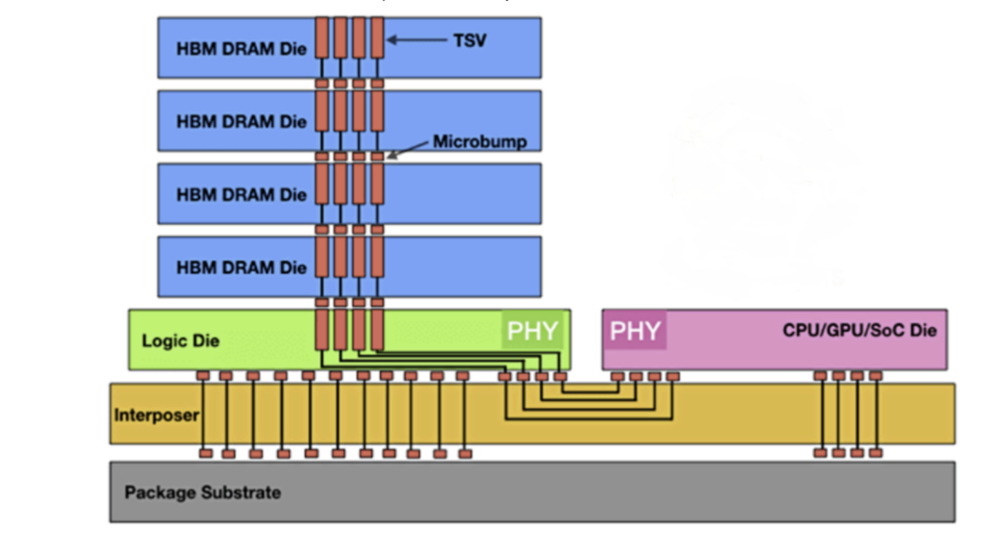
This is where the market stays under-educated. People talk as if packaging is a boring back-end step. It isn’t anymore. Modern AI systems increasingly rely on multiple pieces of silicon working together: logic plus stacks of memory plus fast connections between them. That is not optional. It is the new design.
The thesis is simple. TSM is running out of space.
The amount of research reports I have read saying TSM is outsourcing to ASE or AMKR is ridiculous, and no one really seems to be paying attention.
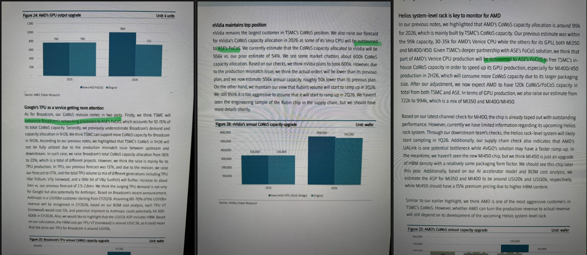
Put simply, it is another choke point you hit even after you “solve” GPUs, even after you “solve” memory supply, and even after you “solve” custom chip design. The winner of the chip war still has to ship product, and shipping product increasingly runs through advanced packaging capacity.
I think the underestimated winner here is INTC. People like to think they are a logic and now foundry company, but they have an incredible packaging arm. That capability can matter even when the foundry narrative is debated. Other names in line after TSM’s capacity gets crunched are ASX and AMKR.
As for equipment, the increased complexity means different types of chips need to be fabricated. And each type of chip requires its own set of equipment.
And this emerging complexity isn’t just for “AI chips”, GPUs and ASICs like Google’s TPU. The real kicker is the crunch now unfolding in the “boring” chip markets.
As we all know, memory is in a real shortage. HBM is spoken for. DRAM is tight.
Logic (CPUs) will become short. Not because demand is “hot,” but because the industry (which is just TSM) has allocated all their capacity to GPUs and packaging.
Analog (the simple chips like those used to turn a flashlight on and off) looks like it can trough with the auto cycle. Counterintuitive, but this can add to the equipment story: when one segment is bottoming, the industry doesn’t stop investing. It reallocates. It upgrades. It prepares for the next turn. Troughs are when the next order wave gets seeded.
Names in the space that would capture upside in all of the above would be ASML, ACMR. More targeted plays include AIXA.DE, ENTG, and ONTO.
Health Care Providers
Health care providers and managed care got hit in 2025 for the same reason the market hits anything it cannot model cleanly. Medical costs surprised higher, utilization stayed annoyingly elevated, and the post-COVID unwind made the risk pool look worse before it could look better. Add a thick layer of political noise and it became easy for investors to treat a messy year as proof the business model is “broken.” That is how you get best-in-class operators trading like permanently impaired assets.
In Medicaid, states do not get to underpay forever. The system has built-in pressure to reset rates when realized costs run hotter than what was priced. If medical loss ratios are elevated, rate updates tend to follow. That is the core mechanic that makes “worst behind us” a reasonable base case over the next 12–24 months. You do not need utilization to magically disappear. You need pricing to catch up, and for the distortion from redeterminations to fade as the membership base normalizes.
This is why high-quality names matter. The best operators are basically the “low-cost insurers” of government programs. They run leaner, they do not rely on expensive distribution, and they tend to win business when states rebid contracts because they are operationally reliable. That operating leverage cuts both ways. It made 2025 look ugly, but it also means that even modest normalization in medical trends and reimbursement can translate into a sharp earnings recovery. In the meantime, these companies can defend themselves with buybacks, selective M&A, and simply letting time do the work.
The political angle is a free option. The market keeps a permanent discount on Medicaid and ACA-exposed managed care because it constantly fears sweeping reform or aggressive cuts. But midterms have a habit of creating gridlock. And gridlock is often the best environment for this industry because it reduces the probability of dramatic policy change in either direction. If we get a shift that increases legislative friction, the “policy risk premium” can fade, and that alone can move multiples even before fundamentals fully normalize.
Net. This is a classic setup where the tape punished uncertainty, and the next year is about the uncertainty collapsing and the worst being behind them. Names like MOH, UNH, and CNC are the obvious winners. ASTH and TOI are some small caps that have a little more torque.
That’s a wrap, I commend you if you made it all the way through. I hope my insights were at least a tad enjoyable, interesting, or educational. Here’s to a great 2026.